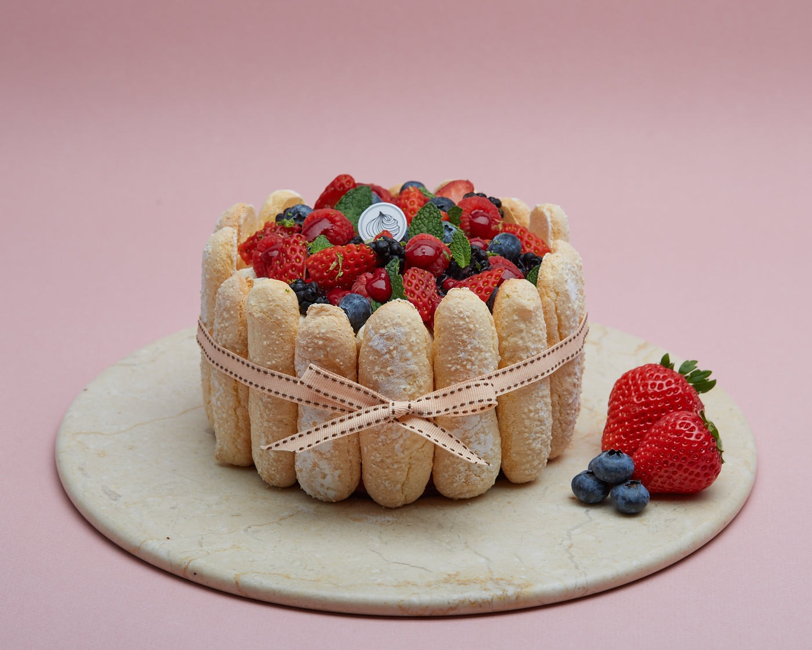
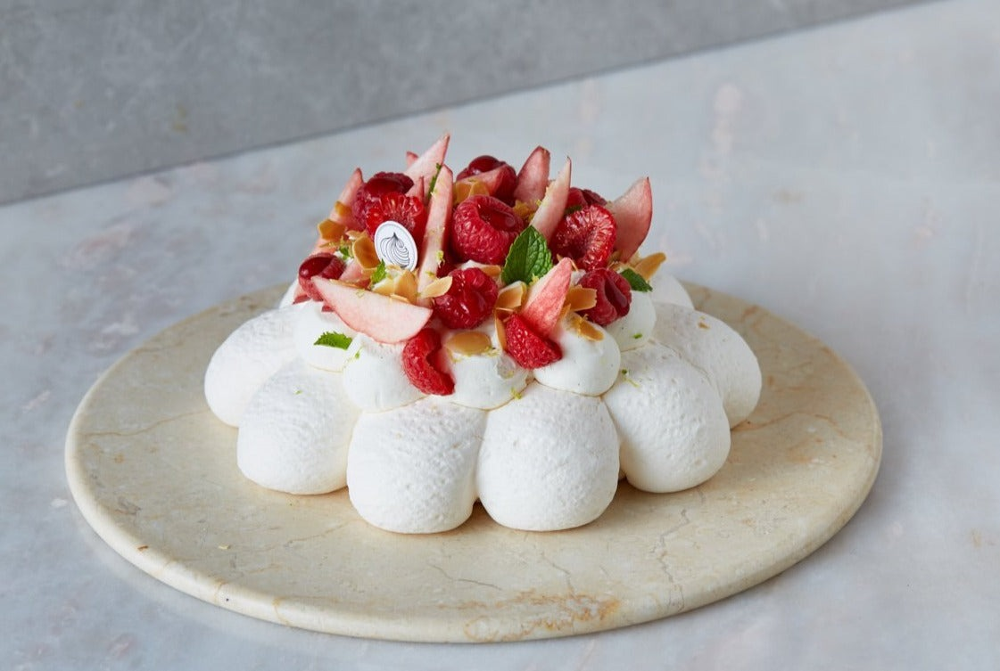
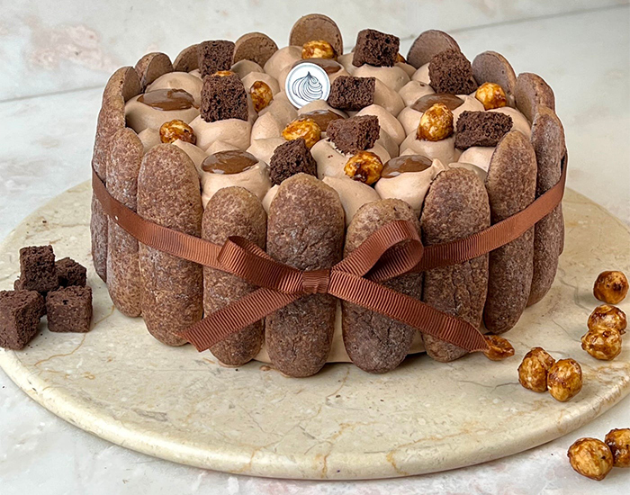

Home
About us
Gallery
Contact us
Useful Links
Dessert
|  | 典故夏洛特蛋糕是傳統法式甜品中的永恆經典。 |
|  | 概念來源雖然帕芙洛娃蛋白餅源自南半球之地，並且以俄羅斯芭蕾舞者命名， |
|  | 典故夏洛特蛋糕是傳統法式甜品中的永恆經典。 |
|
||||||||||
Home |
About us |
Gallery |
Contact us |
Useful Links |
||||||
Dessert
|
||||||||||
| Copy right 2023 | ||||||||||